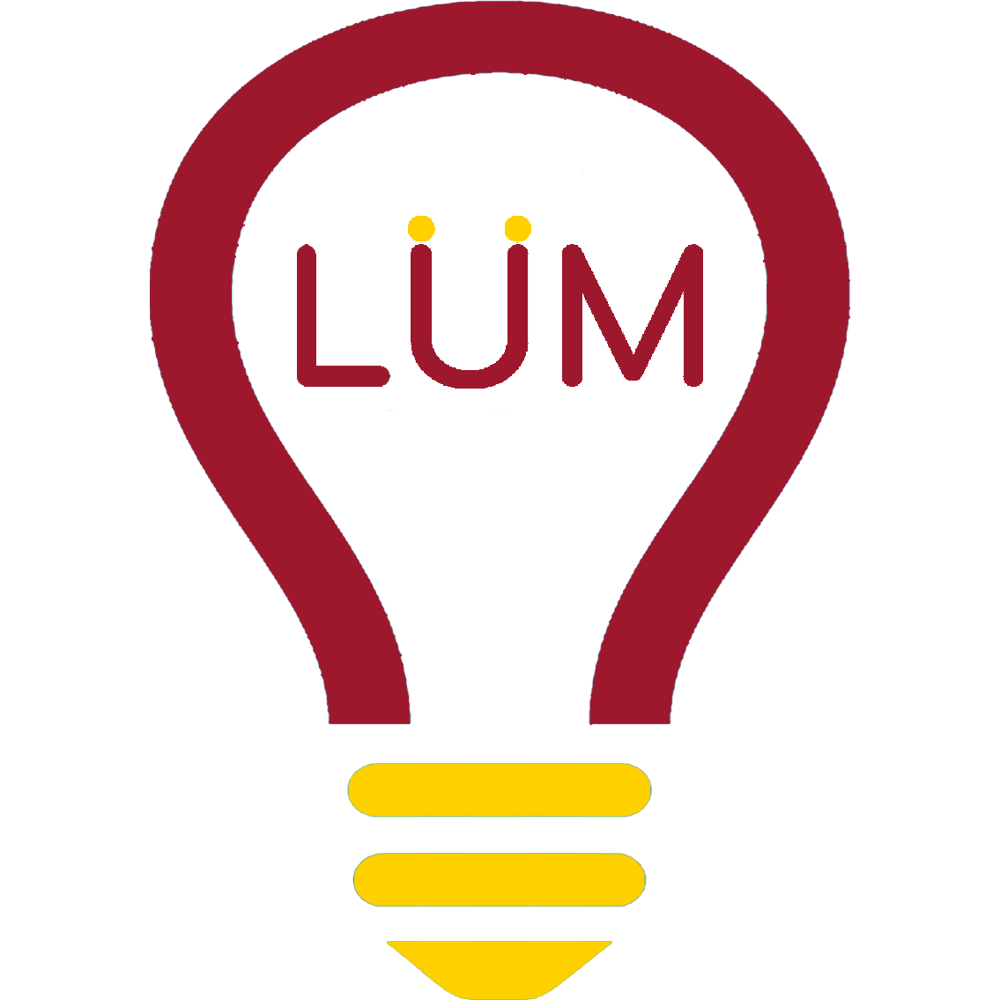
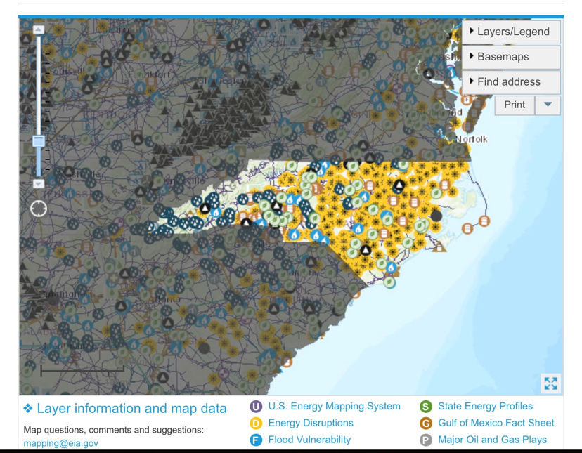
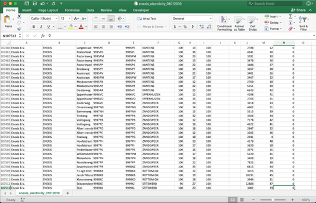
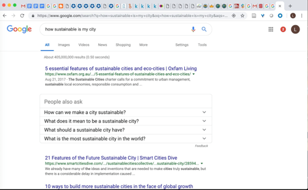

About Us
There is so much data about sustainability that exists, but there is no was to easily grasp the current situation.
Project LUM changes that.
While brainstorming ideas for this Make-A-Thon, our chief goal was to make something that was actually impactful. So, we set out to find some of the biggest environmental problems. We found a hodgepodge of reports from the local level, all the way up to the international stage. We also found resources that could be really useful if we paid a lot of money for them, or had degrees in information science. However, despite hours of research, the opaque and complex patchwork of resources didn’t allow us to get a very good picture of the current sustainability landscape and where our time and resources would be best spent.
This seemed like a problem. If we couldn’t find the numbers we needed for a Make-A-Thon, then what was it like to be a researcher, an activist group, a local government, or a country seeking information on sustainability metrics. It seemed like a problem so urgent, in fact, that we decided we needed to do something about it. And with that, we developed the beginnings of Project LUM, a non-profit with the goal of providing intuitive statistical summaries of sustainability metrics to the globe.
Project LUM is certainly environmentally sustainable: all we need is the internet, our computers, and teamwork. We expect the positive environmental impact of the site could be limitless, as it’s only limited by the imaginations of those who decide to use it as their tool.
The Problem
When faced with a wicked problem like climate change, data is essential. Thus, it is no surprise that organizations and governments often keep records of energy and water usage. This is wonderful news! However, there are no tools for quickly putting one’s fingers on the pulse of current measures of sustainability. The patchwork of resources that exist are complex and largely scholastic, requiring massive amounts of time, research, money, and expertise in order to extract useful insight. And even when there are intuitive resources, they often focus on specific locations and become quickly outdated, leaving massive holes in one’s understanding of the sustainability landscape. This circumstance disincentivizes low-budget initiatives from creating truly impactful change, for individuals can’t easily discover 1) what the biggest problems are, and 2) how they vary between communities.
Many graphics don't show the data we care about in regards to climate change. Additionally, they are pretty dense and hard to interpret.
This chart is already outdated. Also, units like Trillion Btu are not very user friendly. (Source: Energy Information Administration, State Energy Data System)
This data is very raw, and only 1 out of 58 spreadsheet with Netherland's energy data, each with over 100,000 rows. Not for the average individual.
Here is part of a UN report, sent out in PDF format. Lots of missing data, and the data that exists is already aggregated.
No "at a glance" calculator or comparison tools currently exist.
ArcGIS is a great resource for librarians and academics with access to this resource, but it is neither user friendly nor accesible for most people.
The Solution
Project LUM is an accessible online data hub, which elegantly displays statistical summaries of sustainability metrics. Our data hub is designed to harmonize with the lives of real people: the intuitive design will break information barriers by inspiring journalists to write stories about cross-community comparisons, arming activist groups with the statistics they need to effect change, and empowering individuals with a launch pad for their curiosity, research, and innovation.
Project LUM is a living project, which will grow and change with human civilization. The first steps of our journey will focus on gathering the low-hanging fruit: find and analyze the high-quality data that already exists so that everyday people can begin to benefit from the insights generated from these rich resources.
This means, however, that the metrics displayed by our site will be limited (for now) by what is currently measured. The hope, however, is that as Project LUM expands, organizations and governments will become increasingly motivated and excited to take part in this ambitious project to document humanity’s resource consumption in a time of grave need. To that end, we expect our metrics to expand and change with humanity--and we like it that way.
Substantiation
Project LUM is environmentally sustainable.
This speaks for itself: since we didn’t create a product so much as a virtually-hosted project, we aren’t producing anything harmful. We don’t need extra computers, or material items that don’t already exist. All we need is data, community, and cooperation. The positive environmental impact that could come of it, however, is limitless: we expect people will build grassroots campaigns, complete research, and start companies based on the data that becomes available via Project LUM.
Project LUM is socially sustainable.
When people have good tools, they use them well.
Project LUM seeks to empower those who don’t have the time, money,
or expertise to glean insight from opaque sustainability data sources of the present.
Our belief is that when people are armed with intuitive, accurate information, they use
it to further their own interests. We saw this with the printing press, then again with
Google, and we see no reason why LUM should be any different. We hope LUM will provide
a starting point for everything from individual curiosity to international climate action.
Also, we pride ourselves in collecting absolutely no personal data: we do not have user
logins, and the most granular data we will ever publish is at the multi-story building
level. Further, if an organization wishes to decline cooperating with Project LUM, they
certainly may (although we hope they’ll be enthusiastic to join in on this exciting mission!).
Project LUM is economically sustainable.
Project LUM prioritizes accessibility and delightful user experience, which means we neither
charge for our website, nor sponsor advertisements on our website. That leaves us with a
non-profit model as the most viable option, at least in the beginning phases of development.
Luckily, however, Project LUM does not cost money. It costs time and knowledge. Thus, our
largest cost will be compensating the people pouring their time and knowledge into the project.
However, we believe many entities would be interested in helping a tool like this flourish. Thus,
we expect we can receive funding from foundations, research institutions, and governments.